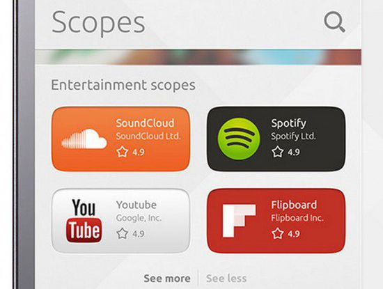
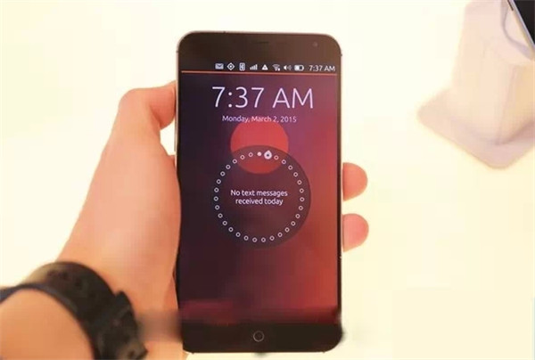

转载自：钛媒体 http://www.tmtpost.com/1508908.html
作者： 科技新知
本文地址：https://linux.cn/article-7054-1.html
在MWC 2016上，魅族和Canonical联合展出了Ubuntu版魅族Pro 5；与此同时，魅族官网也已经开启了Ubuntu版魅族Pro 5的预定。这是魅族继去年5月份的Ubuntu版MX4之后推出的第二款Ubuntu手机，也是全球范围内发售的第四款Ubuntu手机。
自然会有一批Ubuntu的粉丝为这款旗舰新品的到来而感到欢欣。但是即使这款产品有幸没能成为这个小众手机操作系统的回光返照，那我们也有理由担心在安卓和iOS的统治之下Ubuntu未来会拥有怎样逼仄的生存空间。
Ubuntu这个词汇来自于非洲南部祖鲁语，意为“博爱”或者是“天下共享”；它于2004年被来自南非的企业家马克命名为旗下Linux开源项目的名称。在前移动互联网时代，Ubuntu作为一款桌面操作系统被许多非Windows&MAC用户安装在自己的桌面电脑上。
随着移动互联网的滚滚浪潮到来，Ubuntu也被裹挟其中。2012年，Ubuntu发布了“Ubuntu for Android”，这是一个可以使用户在安卓系统中运行的嵌入式全功能系统包，可以在外部连接显示屏的情况下帮助用户实现更多功能。
但显然，Ubuntu for Android对安卓的依附性太过明显，而且对手机处理能力的要求过高，很难真正赢得用户。
2013年1月，Ubuntu的开发商Canonical宣布推出独立的Ubuntu移动版操作系统。该系统主要有以下几个特点值得关注：

在上述看起来颇为吸引人的使用特征之下，Ubuntu创始人马克对这款全新移动操作系统的未来颇有信心。在发布两个月之后，马克在接受中国媒体采访时表示，Ubuntu智能手机和平板电脑将于第二年，也就是2014年进入中国市场。
只不过，马克似乎过于自信了。2013年iOS和安卓如日中天，并且处于急速发展的状态；中国智能手机的发展更是如火如荼；而Ubuntu才刚刚面世，在时机上已经晚了很多。更何况，Ubuntu在自身的功能上还有诸多不完善之处。
当然，对于Ubuntu而言，它肯定是要按照自己的路来走的。
2013年7月，Canonical在Indiegogo上发起了一个众筹项目，打算在一个月内筹集3200万美元来打造一部名为Ubuntu Edge的超级手机。一个月后，Canonical筹集到了1281万美元；这笔金额虽然创造了一个众筹历史上的记录，但该项目依然宣告失败。
2014年2月，Canonical宣布与中国手机厂商魅族正式达成合作关系，并将为MX3手机用户提供刷机包。接着双方在2014年的MWC上展出一款搭载Ubuntu的MX3手机。
Ubuntu之所以选择与魅族合作，大概是因为2013的魅族特立不凡的小众气质Ubuntu系统相呼应；而且在国内的厂商中，唯有魅族采用了“小圆圈”式的单一按键方案，这与Ubuntu的全触控操作方案也最为相合。当然站在魅族的角度，一方面可以借Ubuntu来扩大自身国际知名度，另一方面也有“别把鸡蛋放在一个篮子里”的顾虑。
然而，就在人们以为Ubuntu版MX3为期不远的时候， 魅族内部也发生了变革。同样是在2014年2月，黄章回归魅族，开始寻求魅族新的发展方向，比如说引进融资、丰富产品线、价格体系下沉、加大市场营销等。
很难说黄章在2014年的回归究竟在多大意义上影响了Ubuntu版 MX3的命运，但我们看到的结果是：不仅没有Ubuntu 版MX3这款产品的存在，甚至连此前双方宣布合作时所说的MX3 刷机包都没有着落。
于是在智能手机高速发展红利进入最后一年的2014年，Ubuntu系统依然没有通过硬件产品落地。
另外一个更加严峻的问题是：作为一款移动操作系统，开发者的认同和支持也至关重要。Ubuntu在没有实质性消费者用户的情况下，很难会进入到开发者的视野。从某种意义上来说，Ubuntu MX3的难产也加重了这个问题的严重性。
为此，Ubuntu还选择与中国移动合作。双方在2014年底发起了Ubuntu开发者创新大赛。该大赛旨在面向开发者公开征集优秀适配Ubuntu操作系统的Scope、应用等作品，共同打造Ubuntu生态。当然，所有参赛作品要在Ubuntu商店上线。
2015年8月，该赛事已经结束；据官方称有上千名开发者参与其中。通过这个数字，可以想见Ubuntu商店的应用数量与安卓和iOS相比，依然处于极其匮乏的状态。
2015年2月，第一款搭载Ubuntu系统的智能手机终于问世。Canonical公司联合西班牙BQ公司推出了一款名为Aquarius E4.5的Ubuntu手机。
BQ是一家成立于2005年的西班牙设备厂商。在智能手机的发展策略上，BQ公司定位于中低端市场，为用户提供较为廉价的手机。正是在这一策略下，BQ在2013年度实现了旗下智能手机销量翻三倍的目标。
当然，这可能也是Canonical选择与BQ合作的一个重要原因。
这款搭载Ubuntu的Aquarius E4.5同样定位于中低端，无论是该机的相对低端配置还是170欧元的价格，都注定了它是一款走量的产品。当然，站在Ubuntu的角度，它也的确需要一款性价比较高、能够迅速铺开的机型来推广自己的系统。
这款Ubuntu版Aquarius E4.5手机不仅仅在西班牙发售，也在其他欧洲国家全面上市。几个月后，双方有联合推出了升级版：Aquarius E5。
当然，在中国这边，Canonical依然与魅族保持着合作关系。在2015年3月份召开的MWC2015上，双方展出了搭载Ubuntu系统的MX4；两个月之后，MX4 Ubuntu开发者版本在国内发售，但是这场发售只持续了三天左右。6月份，MX4 Ubuntu版在欧洲上市。

很明显，黄章回归之后的魅族在产品线、营销策略和产品气质等方面的诸多调整之后，其与Canonical之间的合作关系似乎越来越趋于淡化。魅族更多地把Canonical作为其在国外打开知名度和影响力的跳板，而没有多少心思在国内推出面向消费者的Ubuntu手机。魅族在2015年拥有2000万台的爆发式手机销量，但与Ubuntu没有任何关系。
令人欣慰的是，Ubuntu还活着。在2016年MWC上，搭载Ubuntu的魅族Pro 5手机和BQ Aquarius M10平板电脑出现在展台上，再次吸引了人们的关注。与此同时，Ubuntu 版魅族Pro 5在官网开启了预定。
不过，当智能手机的发展已经进入饱和状态，当安卓和iOS系统生态的发展已经高度成熟，当人们对于智能手机的选择愈发趋于理性，又有多少人会仅仅因为操作系统的与众不同而选择一款两千多元的产品呢？
转载自：钛媒体 http://www.tmtpost.com/1508908.html
作者： 科技新知
本文为转载，如需再次转载，请查看源站 “钛媒体” 的要求。如果我们的工作有侵犯到您的权益，请及时联系我们。
文章仅代表作者的知识和看法，如有不同观点，请楼下排队吐槽 :D
Linux.CN © 2003-2016 Linux中国 | Powered by DX | 图片存储于七牛云
京ICP备05083684号-1 京公网安备110105001595
服务条款 | 除特别申明外，本站原创内容版权遵循 CC-BY-NC-SA 协议规定


分享到微信朋友圈
打开微信，点击底部的“发现”，
使用“扫一扫”将网页分享至朋友圈。